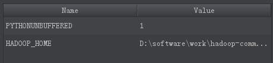

常用软件安装
Markdown
pycharm 安装
1.安装 python2.7.13，完成后命令行使用 python 查看
2.安装 Pycharm
3.下载Spark的安装包，解压到 E:\spark\spark-2.1.0-bin-hadoop2.7
4.设置 SPARK 的环境变量 SPARK_HOME 和 Path
5.下载 Hadoop，其中包含一个文件 winutils.ext,文件夹在 E:\hadoop-common-2.2.0-bin-master，并且在环境变量中设置 HADOOP_HOME
6.将 spark 路径 E:\spark\spark-2.1.0-bin-hadoop2.7\python 中 pyspark 文件夹全部拷贝到 Python 安装环境下的 site-packages 中：E:\SoftWare Tools\Python\PythonEnvironment\Lib\site-packages
7.打开 Pycharm，写 spark 程序时，遇到 py4j 的错误，解决办法：需要将 py4j 的包导入到 Python 环境变量下的 site-packages 下。
8.在 pycharm 中的 run->edit configurations->environment variables 中设置 HADOOP_HOME 的值，如

- 跳过注册码
在我的电脑地址栏输入
%LocalAppData%\Atlassian\SourceTree\
于是打开 SourceTree 的文件夹,新建 accounts.json 该文件的内容如下:
[
{
"$id": "1",
"$type": "SourceTree.Api.Host.Identity.Model.IdentityAccount, SourceTree.Api.Host.Identity",
"Authenticate": true,
"HostInstance": {
"$id": "2",
"$type": "SourceTree.Host.Atlassianaccount.AtlassianAccountInstance, SourceTree.Host.AtlassianAccount",
"Host": {
"$id": "3",
"$type": "SourceTree.Host.Atlassianaccount.AtlassianAccountHost, SourceTree.Host.AtlassianAccount",
"Id": "atlassian account"
},
"BaseUrl": "https://id.atlassian.com/"
},
"Credentials": {
"$id": "4",
"$type": "SourceTree.Model.BasicAuthCredentials, SourceTree.Api.Account",
"Username": "",
"Email": null
},
"IsDefault": false
}
]